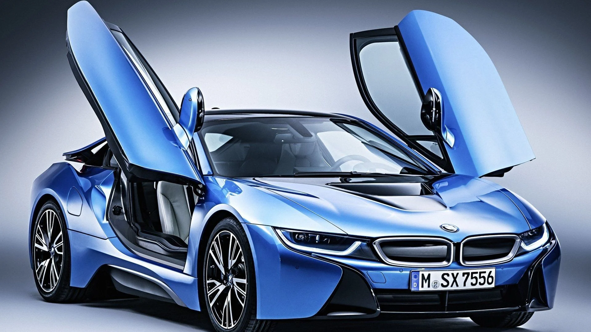
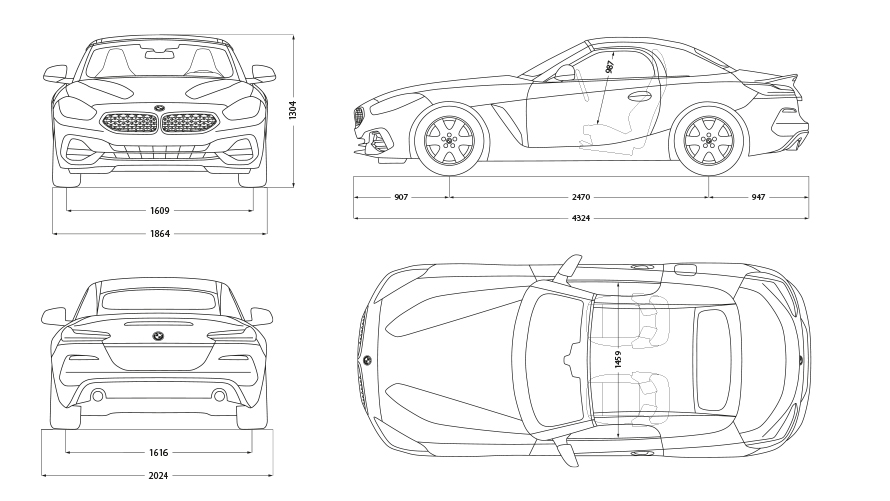
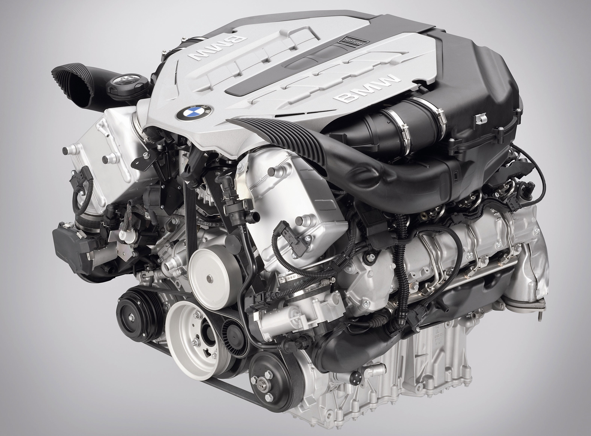

ARTICLE ABUOT BMW CAR.
Article on BMW Design
The BMW Group uses the language of diverse shapes and dynamic designs to give its cars a lively and exuberant appearance, something that few car manufacturers can do. And for everyone who wants to enhance this impact to additional levels T exclusivity as a result of the freedoms People demand it for themselves. The interior equipment offered by the BMW Individual Manufaktur gives you refined and understated luxury. These custom features include personalized color options that give the interior two different blends, contrast stitching and accessories that perfectly match the merino leather.
BMW car engine
BMWSix-cylinder engineA 3-liter capacity with a twin turbocharger generates 326 hp and 450 Nm of torque, accelerating the car from 0 to 100 km / h in 5.5 seconds before reaching its top speed electronically limited to 250 km / h.
BMW car features
ٍPowerful engine options including a plug-in hybrid and a V12 turbocharged engine. Standard adaptive air suspension provides a comfortable and controlled ride Exceptional space for rear passengers Abundance of standard equipment including safety technology Intuitive infotainment system.